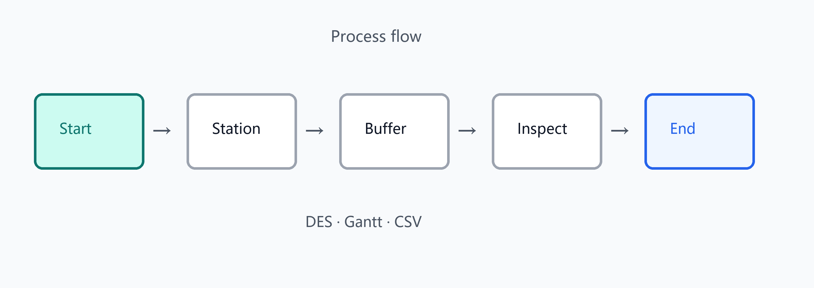

工艺流程节点示意
工艺流程与离散事件仿真
切换到工艺流程模式后，中央区域变为流程画布。
建模
- 节点类型：开始、工位、缓冲、仓库、传送带、装配、检测、结束，以及 AGV 等（以插件版本为准）
- 连线、网格对齐、自动布局；导出流程 JSON
- 作业集（JobSet）模板；可由路径生成
仿真（DES）
- 调度规则：FIFO、SPT、LPT、EDD、CR 等
- 批量、装配、MTBF、废品率；班次日历；到达分布（固定/指数）
- 策略对比与甘特图；优化后仿真
- 结果：汇总、利用率、甘特、轨迹 Trace、回放、CSV/JSON 导出
流程数据保存在工程侧车 processFlow 中。